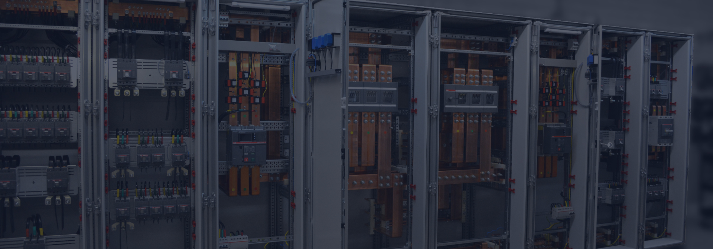
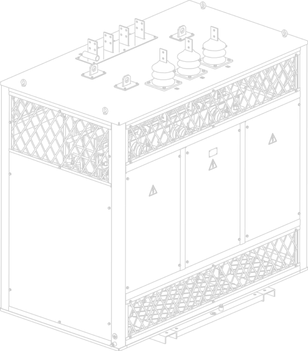

Поставка оборудования
Наша задача обеспечить для Вас лучшее предложение по соотношению цена-качество на нашей «полке». Мы не знаем производителей, у кото- рых всё, что бы они ни изготавливали, получалось одинаково хорошо. Поэтому спектр компаний, с которыми мы сотрудничаем, достаточно широк. Нам также важно, чтобы продукция, которую мы предлагаем, имела стабильное качество и сильную техническую поддержку.

Мы готовы предложить Вам:
Широкий ассортимент оборудования различной ценовой категории: от самых экономичных до эксклюзивных моделей.
Наши преимущества
Мы являемся официальными дистрибьюторами компаний-производителей, поэтому Вы можете быть полностью уверены, что приобретаете оригинальное оборудование, а не сомнительные товары неизвестного происхождения. Вся поставляемая нами продукция сертифицирована, соответствует всем стандартам качества.
Клиенты нашей компании всегда могут рассчитывать на профессиональную помощь в составлении спецификации и подборе необходимого оборудования. Наши менеджеры-консультанты помогут Вам в подборе оптимальной комплектации под любой заказ. Мы также предоставляем услуги по проектированию, монтажу и установке оборудования на объект, а также осуществляем по желанию клиента сервисное обслуживание электроустановок.
Поставляемое нами оборудование применяется на объектах гражданского и промышленного строительства, в области высоковольтных и энергоэффективных решений.
Мы предлагаем европейский сервис и индивидуальный подход к каждому клиенту: разрабатываем удобную схему работы и оплаты.
Работая на рынке электрооборудования более 5 лет, МК «Линейщик» зарекомендовала себя как надежного продавца и помощника при проектировании и монтаже.
Сотрудничество с мировыми производителями и поставщиками позволяет нам гарантировать безупречное качество продукции.
Мы предлагаем европейский сервис и индивидуальный подход к каждому клиенту: разрабатываем удобную схему работы и оплаты.
Работая на рынке электрооборудования более 5 лет, МК «Линейщик» зарекомендовала себя как надежного продавца и помощника при проектировании и монтаже.
Сотрудничество с мировыми производителями и поставщиками позволяет нам гарантировать безупречное качество продукции.